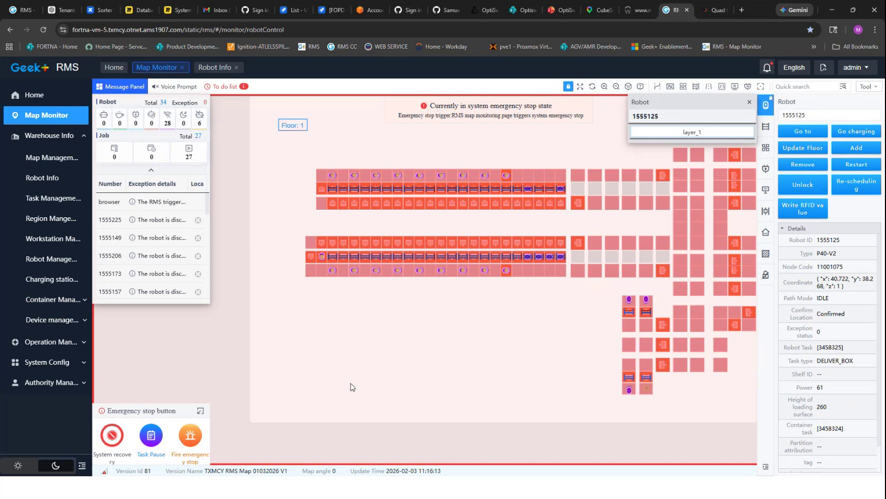

| Procedure ID | proc_check_rms_map_monitor_system_emergency_stop_status_v1 |
|---|---|
| Title | Check RMS Map Monitor for System Emergency-Stop Status |
| Procedure Type | diagnostic |
| Primary Role | operator |
| Support Safe | Yes |
| Capability Tags | e_stop_or_safety_stop, fleet_system_status |
| Access Surface | rms_ui |
| Audience Roles | operator |
| Failure Pattern Tags | site_stoppage |
| Validation Status | needs_sme_review |
| Merge Status | source_finalized |
Use the RMS / fleet status UI Map Monitor to inspect the live system emergency-stop message, fleet Total and Exception counts, and the Robot Info fields associated with a selected robot.
Use this diagnostic on the RMS / fleet status UI when verifying whether the live fleet is reporting a system emergency-stop state and when identifying the robot status information associated with that display.

Responsible role: operator
Instruction:
Open the RMS / fleet status UI and navigate to the Map Monitor page. Confirm that the robot map, Message Panel, and robot status area are displayed.
Expected result:
The RMS Map Monitor page is available and displays the robot map with the fleet monitoring and robot information areas.
Stop or Escalate If:
Responsible role: operator
Instruction:
On the RMS Map Monitor, inspect the fleet summary and note the displayed Total and Exception counts. The captured RMS screen shows Total 34 and Exception 0; use the values currently displayed in the live RMS session rather than assuming those captured values remain current.
Expected result:
The current RMS fleet Total and Exception values are visible and can be used to characterize the displayed fleet state.
Stop or Escalate If:
Responsible role: operator
Instruction:
Inspect the RMS Map Monitor Message Panel and message area for the exact status text "Currently in system emergency stop state."
Expected result:
The operator can determine whether the RMS Message Panel currently displays the system emergency-stop status.
Stop or Escalate If:
Responsible role: operator
Instruction:
When an affected robot entry is present in the RMS Map Monitor, select it and review the Robot Info panel. Inspect Robot ID, Type, Node Code, Path Mode, Location, Exception status, and Robot Task information. The captured screen includes Robot ID 1555125, Type P40-V2, Node Code 11001075, Path Mode IDLE, Location, Exception status, and Robot Task details; use the values currently displayed for the selected robot.
Expected result:
The selected robot's identifying, location, exception, path, and task fields are visible and can be associated with the RMS emergency-stop or exception display.
Stop or Escalate If: